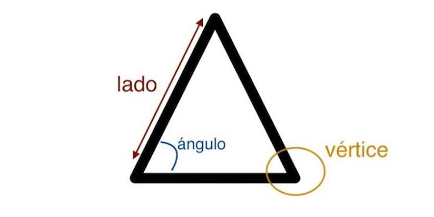
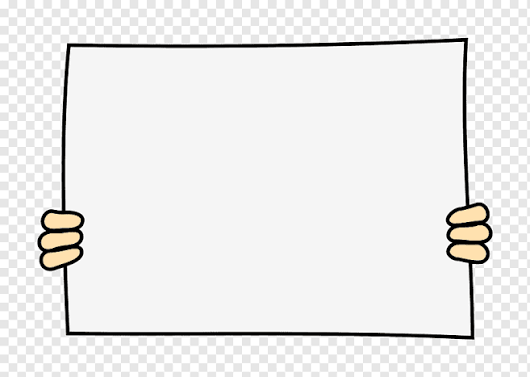
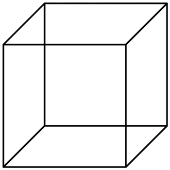
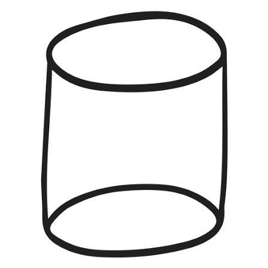
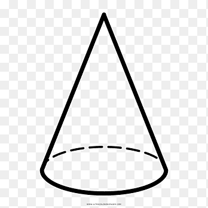
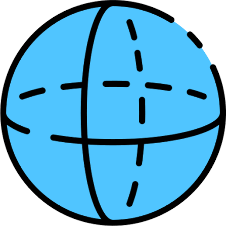

Servicio Nacional de Aprendizaje - SENA
Evidencia GA2-240201528-AA4-EV01
Tecnólogo en Guianza Turística
Ficha 3497850
Nayder Jesus Ballesteros Novoa
Oscar Escobar
Javier Antonio Velasco Mendoza
Tecnólogo en Guianza Turística
Ficha 3497850
Las matemáticas permiten resolver problemas presentes en la vida diaria mediante procedimientos organizados y precisos. Entre las operaciones más utilizadas se encuentran el cálculo de áreas, perímetros y volúmenes de figuras geométricas.
Para facilitar estos procesos se desarrolló una aplicación web capaz de calcular automáticamente diferentes figuras planas y sólidos regulares utilizando algoritmos programados en JavaScript.
En muchas situaciones académicas y laborales es necesario calcular áreas, perímetros y volúmenes. Cuando estos cálculos se realizan manualmente es posible cometer errores.
Por esta razón se diseñó una aplicación que automatiza el proceso mediante un algoritmo que solicita los datos necesarios, aplica la fórmula correspondiente y muestra el resultado de forma inmediata.
| Figura | Fórmula |
|---|---|
| Triángulo | (Base × Altura) ÷ 2 |
| Rectángulo | Base × Altura |
| Cubo | Lado³ |
| Cilindro | π × r² × h |
| Cono | (π × r² × h) ÷ 3 |
| Esfera | (4 × π × r³) ÷ 3 |

Área = (Base × Altura) ÷ 2
Perímetro = a + b + c

Área = Base × Altura
Perímetro = 2(Base + Altura)

Volumen = Lado³

Volumen = π × r² × h

Volumen = (π × r² × h) ÷ 3

Volumen = (4 × π × r³) ÷ 3
Aquí aparecerá el resultado del cálculo.
Aquí aparecerá el procedimiento del cálculo realizado.
El usuario selecciona la figura geométrica que desea calcular.
El sistema solicita las medidas necesarias según la figura seleccionada.
El algoritmo verifica que los datos ingresados sean válidos.
Se identifica la fórmula matemática correspondiente.
Se realiza el cálculo utilizando las operaciones matemáticas.
El sistema muestra el resultado y el procedimiento utilizado.
Los algoritmos permiten resolver problemas matemáticos de manera organizada, rápida y precisa.
La programación facilita la automatización de cálculos reduciendo errores y optimizando el tiempo de respuesta.
Este proyecto permitió aplicar conocimientos de matemáticas y programación para desarrollar una herramienta útil y funcional.